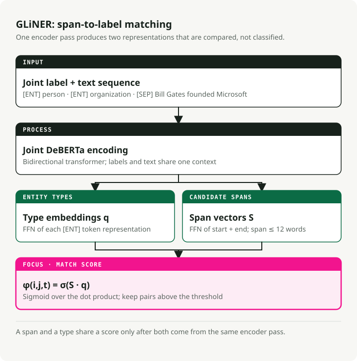
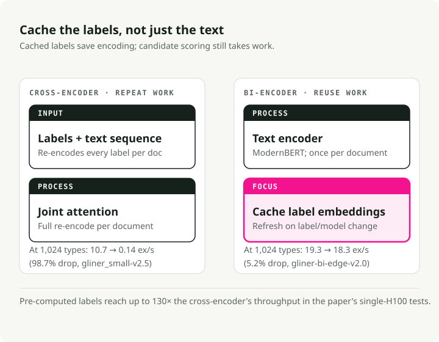
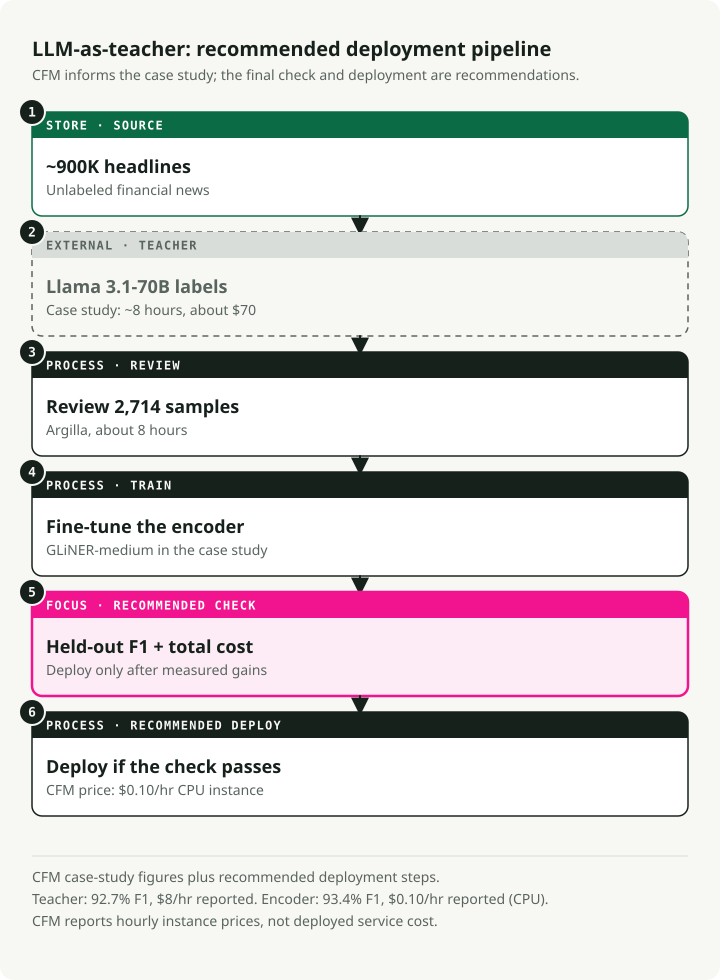
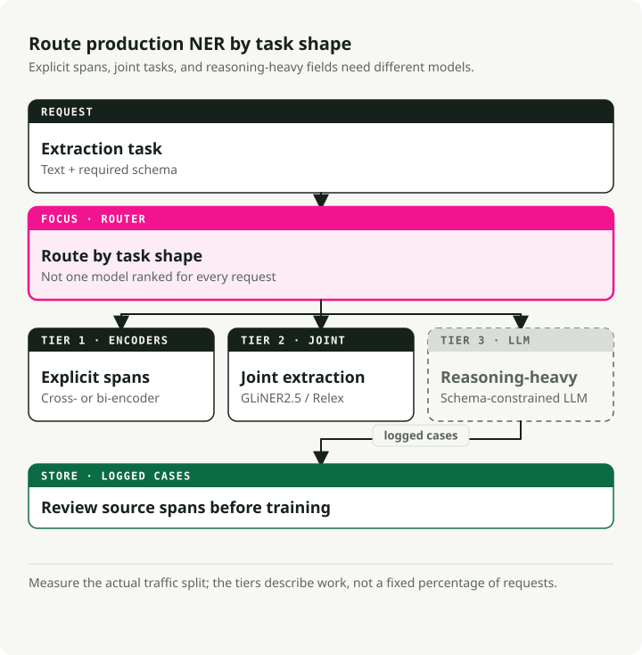

The Definitive Guide to NER in 2026: Encoders, LLMs, and the 3-Tier Production Architecture
Named entity recognition (NER) no longer requires a simple choice between fast encoders and accurate LLMs. A 300M-parameter GLiNER model matches the zero-shot accuracy of 13B UniNER while running 100 times faster. A newer bi-encoder variant supports millions of entity types with 130 times the throughput of the original cross-encoder. These results support a practical pattern: use an LLM to label data, fine-tune a compact encoder, and deploy it with ONNX or Rust.
I built the companion repo and benchmarked every major approach. Encoders won the production NER market. LLMs are still essential, but as training data generators rather than inference engines. This guide covers the papers, benchmarks, and deployment patterns behind that shift.
Companion repo: ner-field-guide — runnable demos for GLiNER, ONNX export, LLM-as-teacher pipeline, and structured extraction with Instructor.
TL;DR: You don't need to build NER models from scratch anymore. For zero-shot extraction, GLiNER on CPU via ONNX beats even the latest LLMs at near-zero cost. For domain-specific tasks, the LLM-as-teacher pipeline (LLM labels → review → fine-tune) produces encoders hitting 90-93%+ F1. For cases that need reasoning, use Instructor or Outlines with an LLM API — but budget $2+/1K docs. The 3-tier architecture combines all three.
Where modern systems use NER
NER still finds spans of text and assigns labels to them. What changed is its position in the system. It now supplies filters for RAG, structured arguments for agent tools, and fields for document-processing pipelines. Those uses make latency, cost, and schema flexibility as important as benchmark accuracy.
RAG: Better Retrieval Through Entity Extraction
Similarity search alone struggles when a question contains exact entities. For "what did Anthropic say about model safety in Q4 2024?", the system should extract "Anthropic" and "Q4 2024" as metadata filters instead of relying only on embeddings.
During indexing, you extract entities from each chunk and store them as metadata: {"organizations": ["Anthropic"], "dates": ["Q4 2024"], ...}. This lets you filter by entity before running vector search. Knowledge graph RAG (GraphRAG, LlamaIndex property graphs) goes further: NER plus relation extraction builds a graph that can answer multi-hop questions that flat embeddings cannot.
During query time, entities extracted from the user's question drive routing. A question mentioning a company name goes to a finance index; one mentioning drug names goes to a clinical knowledge base. GLiNER works well here because query entities are unpredictable — you can't retrain for every new entity type users might ask about.
AI Agents: Turning Text into Structured Facts
Agents receive unstructured text — web pages, API responses, user messages — and need to act on it. NER converts that text into structured facts the agent can reason over, store, or pass to tools.
Two places it matters most.
The first is tool routing. When a user says "schedule a meeting with Sarah Chen from Accenture on Thursday at 2pm", the agent needs to extract PERSON: Sarah Chen, ORGANIZATION: Accenture, and DATETIME: Thursday 2pm before calling the calendar API. An encoder NER model does this in under 10ms. An LLM adds 1-2 seconds per call, and that delay compounds across multi-step workflows until an "instant" agent no longer feels instant.
The second is entity tracking across conversations. Agent memory systems need to know that "Sarah" in turn 3 and "Ms. Chen" in turn 12 are the same person. NER identifies the spans; entity linking resolves them to the same ID.
The constraint in both cases is latency. A 200ms NER call inside a 10-step agent chain adds 2 seconds of perceived delay. That's why encoder models, not LLM-based extraction, are the right choice for entity work inside agent loops.
Document Intelligence: From Images to Structured Data
OCR turns images into text. NER turns text into structured fields. Together, they power document digitization at scale.
A standard pipeline first uses OCR, such as Tesseract, Azure Document Intelligence, or AWS Textract, to produce text and bounding boxes. NER then extracts fields such as invoice_number, vendor_name, line_items, total, and due_date. The same sequence applies to contracts, medical records, and regulatory filings.
Modern platforms combine three steps: layout understanding (is this a header or a table cell?), entity extraction (what type is this text?), and relation extraction (which values belong together). GLiNER 2 handles all three in one forward pass; a single model call can return {vendor: "Acme Corp", amount: "\$4,200", due_date: "2026-04-15"} from an invoice.
This is where cost matters. A mid-sized accounting firm processes tens of thousands of invoices monthly. Routing each one through an LLM, even a cost-efficient model like GPT-5.4 Nano, costs hundreds of dollars per day. A fine-tuned GLiNER on CPU costs cents. Your CFO will notice the difference. The path: annotate 500 sample invoices with an LLM, fine-tune GLiNER on the results, deploy on CPU at $0.10/hour.
PII Detection and LLM Guardrails
Privacy regulations (GDPR, HIPAA, CCPA) require finding personal data before it reaches downstream systems. For LLM deployments, that means scanning inputs before they hit the model and outputs before they reach the user.
NER handles this directly. De-identification models find PERSON, SSN, PHONE, EMAIL, ADDRESS spans and either redact them or replace them with fake equivalents. John Snow Labs' clinical models hit 96% F1 on PHI detection (vs. Azure 91%, AWS 83%, GPT-4o 79%) while processing 100K+ clinical notes per day.
For LLM guardrails, NER works as a pre-screening layer: scan user input for PII before sending it to an external API, then block or anonymize. This is faster and simpler than asking the LLM to self-moderate. GLiNER is especially useful here because PII categories vary by jurisdiction. You can add new entity types like "genetic information" under a new regulation without retraining.
GLiNER Rewrites NER Economics with a 300M-Parameter Model
GLiNER (NAACL 2024, Zaratiana et al.) made encoder-based NER competitive with LLMs at a fraction of the cost. Instead of treating NER as sequence labeling or text generation, GLiNER treats it as a matching problem: score every candidate text span (each contiguous sequence of words like "Bill Gates" or "Microsoft") against every entity type label, then keep the high-scoring pairs.
The model takes entity type labels and input text as a single sequence: [ENT] person [ENT] organization [ENT] date [SEP] Bill Gates founded Microsoft.... A bidirectional transformer (DeBERTa-v3) encodes everything together.
From the output, the model builds two sets of representations: one for entity types (from [ENT] token positions) and one for text spans (by combining start and end token vectors through a small FFN). A dot product between a span representation and an entity type representation gives a score.
Apply sigmoid and you get the probability that the span from token \(i\) to token \(j\) belongs to entity type \(t\): \(\phi(i, j, t) = \sigma(S_{ij}^T \cdot q_t)\), where \(S_{ij}\) is the span vector produced by the FFN and \(q_t\) is the entity type embedding from the corresponding [ENT] token (Zaratiana et al., 2024, Eq. 1). Spans are capped at 12 tokens to keep things fast.

In practice, that means any natural language description works as a label at inference time. No retraining. You pass in whatever entity types you want ("person", "adverse drug reaction", "financial instrument"), and the model scores spans against them. Three sizes are available: GLiNER-S (50M params), GLiNER-M (90M), and GLiNER-L (300M). Training data comes from the Pile-NER dataset: 44,889 passages with 240K entity spans across 13K entity types, all labeled by ChatGPT. Training GLiNER-L takes about 4 hours on a single A100 (Zaratiana et al., 2024).
Benchmark Results
Zero-shot results from Zaratiana et al. (2024), Tables 1 and 2:
| Model | Params | CrossNER F1 | Avg (20 datasets) |
|---|---|---|---|
| GLiNER-L | 300M | 60.9% | 47.8% |
| GoLLIE | 7B | 58.0% | -- |
| UniNER-13B | 13B | 55.6% | -- |
| GLiNER-M | 90M | 55.4% | -- |
| UniNER-7B | 7B | 53.7% | 45.7% |
| GLiNER-S | 50M | 52.7% | -- |
| ChatGPT (GPT-3.5) | -- | 47.5% | 36.5% |
GLiNER-M at 90M parameters nearly matches UniNER-13B (55.4% vs 55.6% F1) while being 140x smaller. Even the tiny 50M GLiNER-S beats ChatGPT (GPT-3.5) by 5 F1 points. The multilingual variant — trained only on English data — beats ChatGPT in 8 of 10 non-English languages (Zaratiana et al., 2024). Note: newer LLMs (GPT-5.4, Claude 4.6) likely score higher on these benchmarks, but the cost gap has only widened — these models are still orders of magnitude more expensive than a 90M encoder on CPU.
The ecosystem is large: 280+ GLiNER-compatible models on HuggingFace, ~350,000 PyPI downloads per month, ~2,800 GitHub stars. Variants cover biomedical text, PII detection, news, and multilingual support.
From quickstart.py:
from gliner import GLiNER
model = GLiNER.from_pretrained("urchade/gliner_medium-v2.1")
text = "Bill Gates founded Microsoft on April 4, 1975."
labels = ["person", "organization", "date"]
entities = model.predict_entities(text, labels, threshold=0.5)
for entity in entities:
print(f" {entity['text']} => {entity['label']} ({entity['score']:.3f})")
# Bill Gates => person (0.987)
# Microsoft => organization (0.991)
# April 4, 1975 => date (0.974)
How GLiNER Compares to spaCy
Any NER guide would be incomplete without spaCy — ~21M downloads per month, and one of the most durable NLP libraries in production. However, it operates on fundamentally different architectural constraints than GLiNER.
spaCy's pipelines (en_core_web_sm, en_core_web_trf) do closed-vocabulary NER: a fixed set of entity types (PERSON, ORG, GPE, DATE, etc.) defined at training time. Want a new entity type? Collect labeled data and retrain. The transformer-backed en_core_web_trf hits 89.8% F1 on OntoNotes 5.0, but only for its 18 predefined types.
GLiNER does open-vocabulary NER: any label works at inference time, no retraining needed. This makes it the better choice when entity types are unknown in advance, change often, or are domain-specific ("adverse drug reaction", "financial instrument", "threat indicator").
My recommendation: use spaCy for standard entity types where pretrained pipelines are well-validated. Use GLiNER when you need flexible, zero-shot types or when your pipeline must adapt without retraining. They work well together — spaCy handles tokenization and sentence splitting, GLiNER handles entity extraction.
UniNER and NuNER: How Small Can You Go?
UniNER (ICLR 2024, Zhou et al.) and NuNER (EMNLP 2024, Bogdanov et al.) both distill LLM annotations into smaller NER models — but they disagree on how small you can go.
UniNER: The Maximalist Path
UniNER fine-tunes LLaMA-7B/13B on 44,889 NER pairs (240K entities, 13K types) generated by ChatGPT. For each entity type, the model answers "What describes [type] in the text?" and outputs JSON lists. A key training trick: frequency-based negative sampling boosts F1 from 31.5% to 53.4% (Zhou et al., 2024).
UniNER-7B hits 41.7% zero-shot F1 across 43 datasets — beating ChatGPT's 34.9% by 7 points. The 13B variant reaches 43.4%, only 1.7 points more for nearly double the compute (Zhou et al., 2024).
The production problem: as a 7B autoregressive model, UniNER needs N forward passes for N entity types, requires 14GB+ VRAM (so that's your GPU budget gone before lunch), and has a restrictive CC BY-NC 4.0 license.
NuNER: The Minimalist Path
NuNER starts from RoBERTa-base (125M parameters) and uses contrastive training with 4.38 million GPT-3.5 annotations across 200K concepts — total annotation cost under $500. After training, the concept encoder is thrown away; the text encoder slots into any standard NER pipeline as a RoBERTa replacement (Bogdanov et al., 2024).
The results: NuNER beats plain RoBERTa by 6-15 F1 points across all few-shot sizes. With just a dozen examples per entity type, NuNER matches UniNER-7B despite being 56x smaller (Bogdanov et al., 2024).
Both papers show the same thing: distilling LLM annotations into smaller models produces NER that beats the teacher. And you don't need 7B parameters — 125M is enough when fine-tuning data is available, with MIT licensing and CPU-friendly inference.
GLiNER 2: One Model, Four Tasks
The original GLiNER ecosystem had a growing problem: separate models for NER (GLiNER), relation extraction (GLiREL), classification (GLiClass), and document-level RE (GLiDRE) — each needing its own deployment, Docker container, monitoring, and failure modes. GLiNER 2 (EMNLP 2025, Zaratiana et al.) merges all four into a single 205M-parameter model with a schema-driven interface.
The architecture keeps the cross-encoder design but extends context to 2,048 tokens (4x the original) and adds declarative schemas for defining extraction tasks. Training uses 135,698 real documents annotated with GPT-4o plus 118,636 synthetic examples (Zaratiana et al., 2025).
On zero-shot CrossNER, GLiNER 2 scores 0.590 F1 — close to GPT-4o's 0.599 as benchmarked in the paper (mid-2025). Newer models like GPT-5.4 likely score higher, but at a fraction of GLiNER 2's speed and cost. For classification, it hits 0.72 average across 7 benchmarks, beating DeBERTa-v3-large (0.69). On CPU, GLiNER 2 runs classification in 130-208ms regardless of label count. DeBERTa scales linearly: 1,714ms for 5 labels, 16,897ms for 50 (Zaratiana et al., 2025).
from gliner2 import GLiNER2
extractor = GLiNER2.from_pretrained("fastino/gliner2-base-v1")
# Multi-task composition in ONE forward pass
schema = (extractor.create_schema()
.entities({"person": "Names of people", "company": "Organization names"})
.classification("sentiment", ["positive", "negative", "neutral"])
.relations(["works_for", "founded", "located_in"])
.structure("product_info")
.field("name", dtype="str")
.field("price", dtype="str"))
results = extractor.extract(text, schema)
One model deployment replaces four. Simpler infrastructure, competitive accuracy.
The Bi-Encoder: Scaling to Million-Label NER
The original GLiNER encodes labels and text together — which creates a bottleneck. More entity types means a longer input sequence, and performance drops fast beyond ~30 types. The GLiNER bi-encoder (February 2026, Stepanov et al.; arXiv 2602.18487) fixes this by splitting text and label encoding into two separate transformers.

The text encoder uses ModernBERT (Ettin family), the label encoder uses sentence transformers (BGE or MiniLM). Spans and labels are scored via dot product. The trick: entity type embeddings can be pre-computed once and cached. At inference, only the text needs encoding — label lookup is instant.
Four model sizes are available, all benchmarked on CrossNER (Stepanov et al., 2026, Table 1):
| Model | Parameters | CrossNER F1 | Throughput (H100) | With Pre-computed Labels |
|---|---|---|---|---|
| bi-edge-v2.0 | 60M | 54.0% | 13.64 ex/s | 24.62 ex/s |
| bi-small-v2.0 | 108M | 57.2% | 7.99 ex/s | 15.22 ex/s |
| bi-base-v2.0 | 194M | 60.3% | 5.91 ex/s | 9.51 ex/s |
| bi-large-v2.0 | 530M | 61.5% | 2.68 ex/s | 3.60 ex/s |
At 1,024 entity types, the bi-encoder (edge, pre-computed) loses only 5.2% throughput versus a single label. The cross-encoder loses 98.7% (10.7 → 0.14 ex/s). That's a 130x throughput advantage at scale. With 100 entity types on a single H100, the bi-encoder processes 1.96 million predictions per day versus 368K for the cross-encoder (Stepanov et al., 2026).
Accuracy holds up too. Bi-encoder-large hits 61.5% CrossNER F1, slightly ahead of the cross-encoder's 60.9%. The authors recommend bi-base-v2.0 (194M) as the sweet spot, hitting 98% of the large model's accuracy at 2.6x the speed (Stepanov et al., 2026).
from gliner import GLiNER
model = GLiNER.from_pretrained("knowledgator/gliner-bi-base-v2.0")
# Pre-compute embeddings for massive label sets — encode once, use forever
entity_types = ["person", "organization", "date"] # Can be thousands or millions
entity_embeddings = model.encode_labels(entity_types, batch_size=8)
# Inference only encodes text — labels are a cached lookup
outputs = model.batch_predict_with_embeds(texts, entity_embeddings, entity_types)
Applications include biomedical NER against the UMLS ontology (4M+ concepts), enterprise taxonomies that evolve without model retraining, and entity linking via the companion GLiNKER framework.
LLMs as Teachers: The $70 Pipeline That Beats the $8/Hour Model
The LLM-as-teacher pattern has become a standard production pipeline. Three studies show what it costs and what you get.

The CFM Case Study
Capital Fund Management extracted company names from ~900K financial news headlines. Zero-shot GLiNER scored 87.0% F1. They used Llama 3.1-70b (the strongest open model at the time) to annotate the full dataset in ~8 hours for ~$70, then human-reviewed 2,714 samples via Argilla in another 8 hours.
Fine-tuning GLiNER on this data pushed performance to 93.4% F1 — beating even the Llama 70b teacher's 92.7%. The fine-tuned model runs at $0.10/hour on CPU versus $8/hour for the teacher — 80x cheaper with better accuracy (CFM Case Study). Today you'd get even better teacher annotations with Llama 4 Maverick or GPT-5.4 Mini at similar or lower cost.
The Refuel AI Study
Refuel AI benchmarked LLM labeling across 8 NLP datasets including CoNLL-2003. GPT-4 (March 2023) hit 88.4% agreement with ground truth — above 86.2% for skilled human annotators. LLMs were 20x faster and 7x cheaper. Their ensembling approach — cheap models for easy examples, GPT-4 for hard ones — reached 95%+ agreement while keeping costs down (Refuel AI Technical Report). With GPT-5.4 and Claude 4.6 now available, teacher quality has only improved.
Tonic.ai Clinical NER
Tonic.ai showed the pattern works for clinical NER too. LLM annotations alone trained a RoBERTa LoRA model to 0.70 F1 on the NCBI Disease Corpus (vs. 0.81 with full human labels). On healthcare ID extraction, it hit 0.947 F1 — above the 0.914 production threshold — with zero human-labeled data.
The Standard Pipeline
The production recipe has settled into six steps:
- Write annotation guidelines in natural language
- Create a small human-labeled validation set (50-200 documents)
- Use an LLM (GPT-5.4 Mini, Llama 4 Maverick, or Qwen3.5) to label bulk training data
- Review a subset via Argilla or Label Studio
- Fine-tune a compact encoder (GLiNER, SpanMarker, RoBERTa)
- Deploy at 16-80x lower inference cost
The cost of NER is no longer "annotate all your training data by hiring an army of undergrads." It's "build a good validation set, write clear guidelines, and let the LLM handle the rest."
Where GLiNER Fails and LLMs Remain Essential
The Sease benchmark (October 2025) tested GLiNER against GPT-4.1-mini on 30 query-parsing tasks. GPT-4.1-mini got 100% fully correct. GLiNER got 53% (16 of 30). But GLiNER responded in 0.08 seconds versus the LLM's 1.21 seconds — 15x faster.
GLiNER fails in three specific patterns:
- Implicit entities: extracting "event" from "Elton John performed at Madison Square Garden" — no text literally says "event," but the LLM infers "concert"
- Label phrasing sensitivity: "2022" scores 0.388 against "date" but 0.958 against "year" — small label changes cause large score swings
- Value mapping: GLiNER returns the exact surface text ("family houses") instead of the canonical value ("Single family house") — LLMs do this naturally
Nested and Overlapping Entities
GLiNER also struggles with nested entities. In "New York University," a human might label both "New York" (LOCATION) and "New York University" (ORGANIZATION). GLiNER picks only the highest-scoring span. This matters in biomedical text ("acute myeloid leukemia" contains both a disease and a modifier) and legal text (nested organizational hierarchies). Specialized models handle nesting, but GLiNER's flat-span design does not.
In practice: GLiNER handles explicit entity extraction — the core of production NER. LLMs step in when extraction requires inference, reasoning, or mapping to predefined ontologies. Use both.
Evaluating NER: Metrics, Pitfalls, and Building Test Sets
I've seen teams ship models scoring 95% F1 on their test set that failed in production because the test set didn't reflect the real document distribution. Your test set is not your production data. This failure mode is common enough to plan for.
The Core Metrics
- Entity-level F1: The standard metric. A prediction is correct only if both the span boundaries and the type match ground truth exactly. This is what most papers report.
- Token-level F1: Scores each token independently. Inflates results because getting most of a long entity right earns partial credit. Prefer entity-level F1.
- Precision vs Recall: These often have asymmetric costs. For de-identification, recall matters more — missing a name is worse than over-redacting. For database extraction, precision matters more — false entries corrupt downstream analysis.
Common Evaluation Pitfalls
- Partial match inflation: "Bill" extracted when the gold label is "Bill Gates" — some scripts count this as a partial match. Use exact span matching unless you have a reason not to.
- Type confusion: "Microsoft" correctly identified as a span but labeled PERSON instead of ORG should score zero. Check your evaluation code handles this.
- Test set leakage: If test entities overlap with training entities, scores are inflated. Zero-shot benchmarks (CrossNER, Few-NERD) exist to test generalization.
Building a Domain Test Set
For production evaluation, I recommend:
- Sample from production data, not curated examples. Include the messy documents your model will actually see.
- 200-500 annotated documents gives stable F1 estimates. Below 100, confidence intervals are too wide.
- Two annotators minimum, with inter-annotator agreement (Cohen's kappa > 0.8). If humans disagree, your model can't do better.
- Stratify by difficulty — easy cases (clean text, standard types) and hard cases (ambiguous entities, jargon, noisy text).
Production NER Across Four Industries
Here are the most mature NER deployments I've found, with specific numbers.
Healthcare
Healthcare has the most mature NER tooling. John Snow Labs has 2,500+ pretrained models including 1,200+ for healthcare, covering 400+ clinical entity types mapped to ICD-10, SNOMED CT, LOINC, and RxNorm. Their de-identification models hit 96% F1 (vs. Azure 91%, AWS 83%, GPT-4o 79%), with Providence St. Joseph Health processing 100K-500K clinical notes daily.
The open-source OpenMed project offers 380+ biomedical NER models with 29.7M HuggingFace downloads, setting new state-of-the-art on 10 of 12 public biomedical benchmarks.
Financial NER
The main use case: SEC filing extraction. John Snow Labs' Finance NLP extracts 11+ entity types from 10-K/10-Q filings (addresses, tickers, fiscal years, stock exchanges). FinBERT-MRC variants hit 0.87-0.93 F1 on financial entity tasks. The key challenge: long documents and nested entities in complex financial instruments.
E-commerce
NER at massive scale. Walmart's EAMT system (KDD 2023) trains on 965 million queries with ~60 entity labels, driving a 0.51% GMV lift in A/B tests — millions in incremental revenue. Home Depot's TripleLearn framework (AAAI 2021) pushed NER F1 from 69.5 to 93.3 through iterative training.
Cybersecurity
The iACE system (CCS 2016) processed 71,000 articles from 45 security blogs, extracting 900K IOC items at 98% precision and 93% recall. Modern systems like CyNER combine DeBERTa (F1 >91%) with regex-based IOC heuristics. The CyberNER unified dataset (2025) harmonizes four datasets into 21 STIX 2.1-aligned entity types, with RoBERTa hitting 0.736 F1.
Deployment Optimization: From Python to Sub-Millisecond Inference
I tested three ways to speed up GLiNER for production in the companion repo.
ONNX Export
GLiNER has native ONNX conversion, and pre-converted models exist on HuggingFace (onnx-community/gliner_small-v2.1). ONNX Runtime delivers 1.5-3x speedup on CPU over PyTorch, with four optimization levels from basic to mixed-precision.
From onnx_export.py:
# Export with quantization
# python convert_to_onnx.py --model_path model/ --save_path onnx/ --quantize True
# Load ONNX model — same API, faster inference
from gliner import GLiNER
model = GLiNER.from_pretrained("path/to/model", load_onnx_model=True)
# Same predict_entities call, 1.5-3x faster on CPU
entities = model.predict_entities(text, labels, threshold=0.5)
INT8 Quantization
Dynamic quantization shrinks models by 2.4x (438MB → 181MB) with less than 0.6% F1 loss. Speed improves 1.8x on CPU. On Intel VNNI CPUs with ONNX Runtime, INT8 reaches up to 6x speedup over PyTorch FP32.
from onnxruntime.quantization import quantize_dynamic, QuantType
# One-line quantization — 2.4x smaller, <1% F1 loss
quantize_dynamic("gliner.onnx", "gliner_int8.onnx", weight_type=QuantType.QInt8)
gline-rs: Rust Reimplementation
gline-rs (Apache 2.0) eliminates Python overhead. On CPU: 6.67 seq/s versus Python's 1.61 — a 4.1x speedup. On an RTX 4080: 248.75 seq/s (gline-rs benchmarks). It supports span and token models, GPU/NPU via ONNX Runtime, and ships as a crate on crates.io.
use gliner::{GLiNER, TokenMode, Parameters, RuntimeParameters, TextInput};
let model = GLiNER::<TokenMode>::new(
Parameters::default(), RuntimeParameters::default(),
"tokenizer.json", "model.onnx")?;
let input = TextInput::from_str(
&["My name is James Bond."], &["person", "vehicle"])?;
let output = model.inference(input)?;
// => "James Bond" : "person" (99.7%)
The fast-gliner package provides Python bindings via PyO3 — Rust speed with Python ergonomics.
Optimization Stack Summary
| Optimization | Speedup vs PyTorch | Model Size | F1 Impact | Best For |
|---|---|---|---|---|
| ONNX Runtime | 1.5-3x | Same | None | Quick win, any hardware |
| INT8 Quantization | 3-6x | 2.4x smaller | <0.6% loss | CPU deployment, memory-constrained |
| gline-rs (Rust) | 4.1x (CPU) | ONNX format | None | High-throughput, latency-critical |
| gline-rs + INT8 | 4-8x | 2.4x smaller | <1% loss | Production at scale |
Structured Extraction: Instructor vs Outlines
When you need more flexibility than encoder models offer — implicit entities, reasoning, ontology mapping — two libraries handle structured extraction from LLMs.
Instructor (~12,600 GitHub stars, ~8.8M downloads/month as of March 2026) by Jason Liu patches LLM SDKs to accept Pydantic response models, with automatic retry on validation failure. It supports 15+ providers and inspired OpenAI's native structured output feature.
From structured_extraction.py:
import instructor
from pydantic import BaseModel
from typing import List, Literal
from openai import OpenAI
class Entity(BaseModel):
name: str
label: Literal["PERSON", "ORGANIZATION", "LOCATION"]
class ExtractEntities(BaseModel):
entities: List[Entity]
client = instructor.from_openai(OpenAI())
result = client.chat.completions.create(
model="gpt-5.4-mini", temperature=0.0,
response_model=ExtractEntities,
messages=[{"role": "user", "content": "BioNTech SE acquired InstaDeep in the U.K."}])
# entities=[Entity(name='BioNTech SE', label='ORGANIZATION'), ...]
Outlines (~13,600 GitHub stars) by dottxt takes a different approach: constrained token generation via Finite State Machines. Instead of generating output and retrying on validation failure, Outlines prevents invalid tokens from being generated at all — 100% schema compliance, zero retries. AWS benchmarks show 98% schema adherence vs. 76% for post-generation validation, with 5x faster generation compared to unconstrained generation with post-validation retries.
import outlines
model = outlines.models.transformers("microsoft/Phi-3-mini-128k-instruct")
generator = outlines.generate.json(model, ExtractEntities)
result = generator("Extract entities from: BioNTech SE acquired InstaDeep in the U.K.")
The choice depends on where you run your models. Instructor is best for cloud LLM APIs — quick prototyping, multi-provider support, familiar Pydantic patterns. Outlines wins for local models where you need format guarantees without external dependencies. Both work well for NER-style extraction, but neither matches encoder throughput: Instructor adds 200ms-2s of API latency per call, and Outlines depends on local model speed. For high-throughput NER, encoders are still 10-100x faster.
The 3-Tier Production Architecture
Here's how I'd put all of this together for production NER.

Tier 1 — Encoder models for known entity types. GLiNER (cross-encoder for <30 types, bi-encoder for 30+), fine-tuned via the LLM-as-teacher pipeline. Deploy with ONNX + INT8 or gline-rs. Handles >90% of volume at sub-50ms latency and near-zero cost. The bi-encoder scales to millions of entity types with pre-computed embeddings.
Tier 2 — GLiNER 2 for multi-task extraction. When one request needs NER + classification + relation extraction + structured data, GLiNER 2's 205M-parameter model replaces four deployments. Runs on CPU at 130-208ms regardless of label count — good for document pipelines needing multiple extraction tasks in one pass.
Tier 3 — LLMs for reasoning-heavy extraction. When entities are implicit, need contextual inference, or require ontology mapping, route to an LLM (GPT-5.4 Mini, Claude Sonnet 4.6, Llama 4 Maverick) via Instructor (cloud) or Outlines (local). This handles the ~10% of queries that encoders miss. The same LLMs also generate training data for Tier 1.
What does this cost? A fine-tuned GLiNER hits 93.4% F1 at $0.10/hour on CPU, matching the 92.7% F1 of its Llama-70b teacher at $8/hour — 80x cheaper.
Trade-offs and Limitations
ML systems always have trade-offs. The important question is where the trade-off appears and whether you can measure it before deployment.
LLM-as-teacher errors propagate. If the LLM consistently gets a specific entity type wrong (e.g., confusing subsidiary names with parent companies), the fine-tuned encoder inherits that bias. The fix is targeted human review — focus effort on entity types where the LLM's confidence is low or inconsistent, not random sampling.
Quantization losses aren't uniform. The ~0.6% average F1 loss from INT8 can be larger on rare entity types with subtle boundary patterns (chemical compounds, multi-word abbreviations). Always benchmark quantized models on your specific entity types, not just aggregate F1.
When the 3-tier architecture is overkill. Single domain, well-defined entity types, 500+ labeled examples? A fine-tuned RoBERTa or spaCy pipeline is simpler and enough. The 3-tier pattern pays off with (a) multiple domains, (b) evolving entity types, or (c) a mix of easy and hard extraction tasks. If you're just extracting names and dates from invoices, Tier 1 alone works.
Bi-encoder quality ceiling. The bi-encoder trades joint attention for throughput. When label semantics interact with text context ("date" vs "year" vs "period" for the same span), the cross-encoder still wins. Use cross-encoder for high-stakes, low-label-count tasks; bi-encoder for breadth.
Key Takeaways
- Encoders won. GLiNER and bi-encoder variants beat LLMs on standard NER benchmarks at 80-130x lower cost. Even with GPT-5.4 Nano and Llama 4 driving prices down, running an LLM for every NER query is no longer justified.
- LLMs are essential — as teachers. They label training data at $70 that would cost thousands in human annotation, and the fine-tuned encoder typically ends up beating the LLM that taught it.
- Bi-encoder unlocks million-label scale. Pre-computed embeddings solve the quadratic complexity problem, with only 5.2% throughput loss at 1,024 labels.
- GLiNER 2 consolidates multi-task extraction. One 205M model for NER + classification + RE + structured extraction.
- Evaluate on your data. Use entity-level F1, build test sets from production documents, and benchmark quantized models on your specific entity types.
- Use the hybrid pattern. Tier 1/2 for fast extraction, Tier 3 for reasoning. The same LLMs that handle the hardest 10% generate the training data for the 90%.
References
Papers
- GLiNER: Generalist Model for Named Entity Recognition using Bidirectional Transformer - Zaratiana et al., NAACL 2024. The foundational span-entity matching architecture.
- GLiNER 2: Open Problems for Automatic Information Extraction - Zaratiana et al., EMNLP 2025 System Demonstrations. Unifies NER, classification, RE, and structured extraction.
- GLiNER Bi-Encoder: Scalable Named Entity Recognition with Bi-Encoder Architecture - Stepanov et al., February 2026. Decoupled encoding for million-label scale.
- UniNER: Universal NER using Large Language Models - Zhou et al., ICLR 2024. LLM-based universal NER via distillation from ChatGPT.
- NuNER: Entity Recognition Encoder Pre-training via LLM-Annotated Data - Bogdanov et al., EMNLP 2024. Shows 125M parameters suffice with LLM-generated training data.
Industry Papers
- EAMT: Entity-Aware Multi-Task Learning for Query Understanding - Walmart, KDD 2023. 965M queries, 0.51% GMV lift.
- TripleLearn: End-to-End NER for E-Commerce Search - Home Depot, AAAI 2021. F1 from 69.5 to 93.3.
- iACE: Automatic Collection of Cyber Threat Intelligence - CCS 2016. 71K articles, 900K IOCs.
- CyberNER: A Harmonized STIX Corpus for Cybersecurity NER - 21 STIX 2.1-aligned entity types.
- FinBERT-MRC: Financial NER via Machine Reading Comprehension - 0.87-0.93 F1 on financial entity tasks.
Case Studies
- CFM Case Study: Fine-tuning GLiNER for Financial NER - Capital Fund Management's $70 LLM labeling pipeline achieving 93.4% F1.
- Refuel AI: LLM Labeling Technical Report - GPT-4 achieving 88.4% annotation agreement, exceeding human annotators.
- Sease: GLiNER as an Alternative to LLMs for Query Parsing - Where GLiNER fails and LLMs are still needed.
- John Snow Labs: Medical Text De-Identification Benchmark - 96% F1 PHI detection comparison across providers.
- OpenMed: Year in Review 2025 - 380+ biomedical NER models, 29.7M HuggingFace downloads.
Tools and Frameworks
- ner-field-guide demo repo - Companion demos for this article: GLiNER quickstart, ONNX export, LLM-as-teacher, and structured extraction.
- gline-rs: Rust reimplementation of GLiNER - 4.1x CPU speedup over Python, Apache 2.0 licensed.
- Instructor - Structured LLM extraction via Pydantic models, ~8.8M monthly downloads.
- Outlines - Constrained token generation via FSMs, guaranteeing schema compliance.
- AWS: Structured Output with Outlines - 98% schema adherence benchmark.